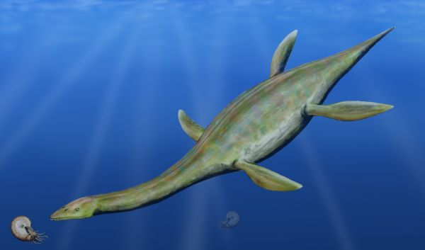
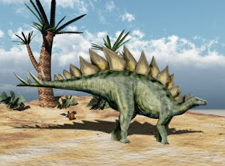
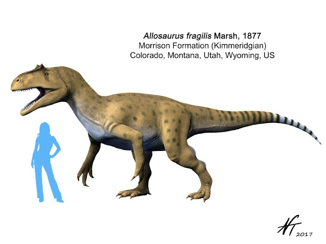

The Jurassic Period
Contrary to the popular media franchise, the Tyrannosaurus Rex did not exist until the Cretaceous Period! However, the Jurassic Period is home to many of the largest aquatic fauna to ever exist, known as the Plesiosaurs! The Jurassic began 201 million years ago and ended 145 million years ago.
Plesiosaurs
Thalassiodracon hawkinsi by Nobu Tamura at http://spinops.blogspot.com/2012/05/thalassiodracon-hawkinsi.html CC BY-NC-ND 3.0
Terrestrial Animals
The Jurassic Period is also home to some other iconic dinosaurs such as the Stegosaurus, and the early cousin of the T-rex, the Allosaurus!
Stegosaurus
The Stegosaurus is a commonly known dinosaur along with the T-rex and Triceratops, but it existed almost 100 million years before either of them!
Stegosaurus ungulatus by Nobu Tamura at http://spinops.blogspot.com/2012/01/stegosaurus-ungulatus.html CC BY-NC-ND 3.0
Allosaurus
The Allosaurus was the Tyrannosaurus Rex of the Jurassic Period, the largest land predator of the time!
Allosaurus fragilis by Nobu Tamura at http://spinops.blogspot.com/2017/09/allosaurus-fragilis.html CC BY-NC-ND 3.0